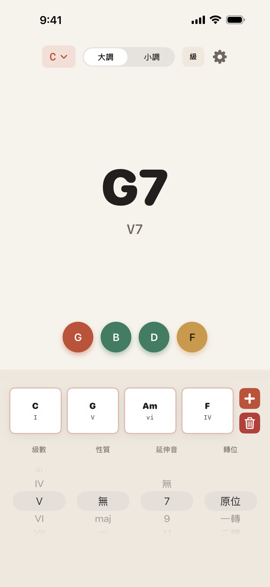
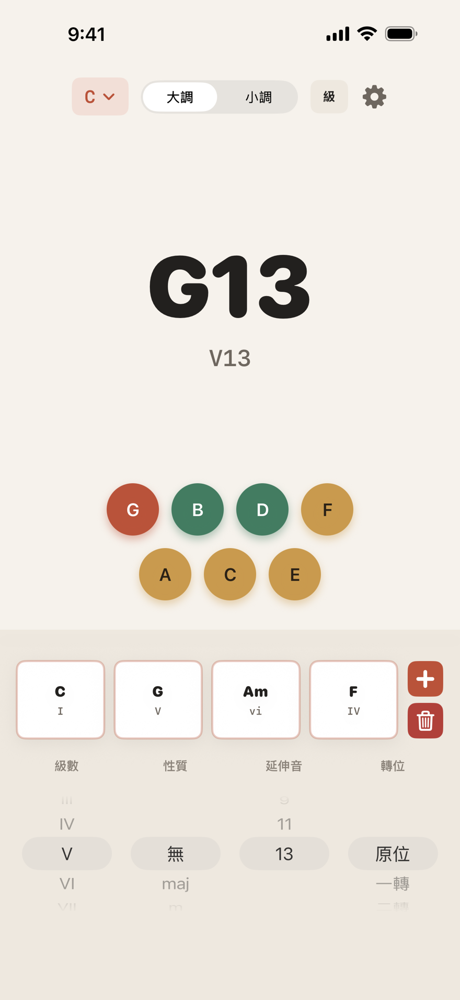
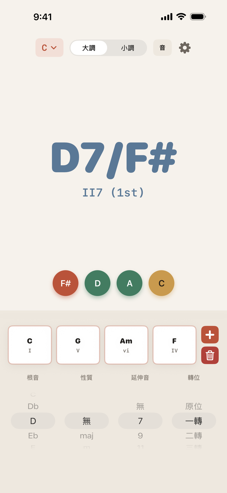
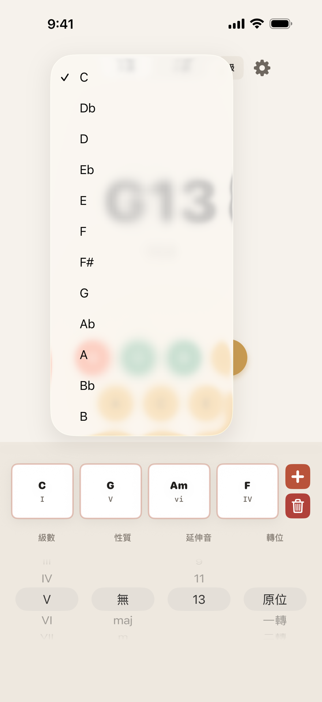
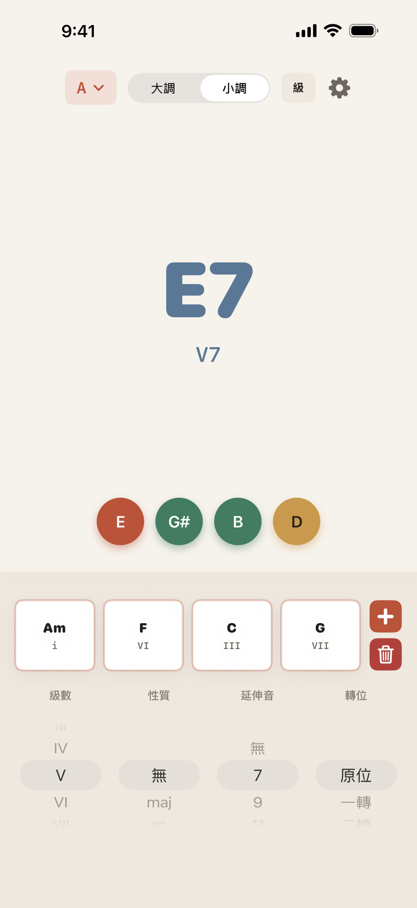

級數找和弦
選擇 I 到 VII，ScaleScout 依目前的調性與調式算出根音與和弦名稱，最適合用級數寫和弦進行。
ScaleScout 把調性、級數、根音、和弦性質、延伸音、轉位與組成音放在同一個清楚畫面裡，讓你在寫歌、練琴或分析和聲時，馬上找到答案。

現在就試試
這是 App 核心流程的網頁版縮影：選調性、選級數、加上延伸音，再把它放進四格和弦進行。換調時，進行會自動移調。
點一下格子可以叫回那個和弦。App 裡還有和弦性質、轉位與根音模式。
核心功能
放在樂器旁、DAW 旁或課堂筆記旁。ScaleScout 的任務很明確：快速回答「這是什麼和弦」、「它是第幾級」、「它有哪些音」。
選擇 I 到 VII，ScaleScout 依目前的調性與調式算出根音與和弦名稱，最適合用級數寫和弦進行。
直接選 C、D、Eb 等根音，App 反推它在調性中的功能，連 bII、#IV 這類變化音級都標得出來。
支援 7、9、11、13，快速看見高階和弦的組成音，適合爵士、R&B、Neo-soul 與流行編曲。
原位、一轉、二轉、三轉依和弦音數自動限制，低音改變時以 D7/F# 這樣的斜線和弦顯示。
陶土色是根音、綠色是三音與五音、沙色是延伸音。Cmaj9 或 Dm13 的結構，用顏色就能讀出來。
最多存四個和弦，切換調性或調式時自動移調，快速比較同一組進行在不同調上的樣子。
三步驟
從 12 個根音與大調／自然小調開始，建立當下的和聲語境。
級數模式適合創作和弦進行；音名模式適合分析已知和弦在調性裡的位置。
maj、m、sus、dim、aug 與 7 到 13 的延伸音，都在同一個滾輪流程裡完成。


App 畫面
米白紙色的介面、大地色的組成音，加上底部的滾輪與和弦進行。所有資訊都在一個畫面裡，不用切換頁籤。


給誰用
ScaleScout 不宣稱自動作曲，也不假裝是 DAW。它專注在一件事：讓和聲資訊更快、更清楚、更容易帶著走。